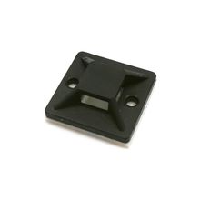

Самоклеящаяся площадка для крепления стяжек 20×20 мм, чёрная (5 шт.)
МеханикаКатегория
Механика
Тип
самоклеящаяся площадка для кабельной стяжки
Размер
20 × 20 мм
Цвет
чёрный
Крепление
самоклеящееся основание
Комплект
5 шт.
Назначение
фиксация и организация кабелей/жгутов
Кратко
Самоклеящаяся площадка 20×20 мм для крепления кабельных стяжек в чёрном цвете, применяется для быстрого крепления жгутов и проводов без сверления. Поставляется комплектом из 5 штук.
Описание
Это небольшая монтажная площадка с клеевым основанием, предназначенная для фиксации кабельной стяжки на ровной поверхности. Такой крепёж используют для аккуратной укладки проводов в электронике, шкафах, автоэлектрике и бытовой кабельной разводке. Чёрная версия обычно подходит для менее заметного монтажа на тёмных поверхностях. Формат 20×20 мм — компактный, для лёгких и средних жгутов проводов.
Документация
id hw-2026-145